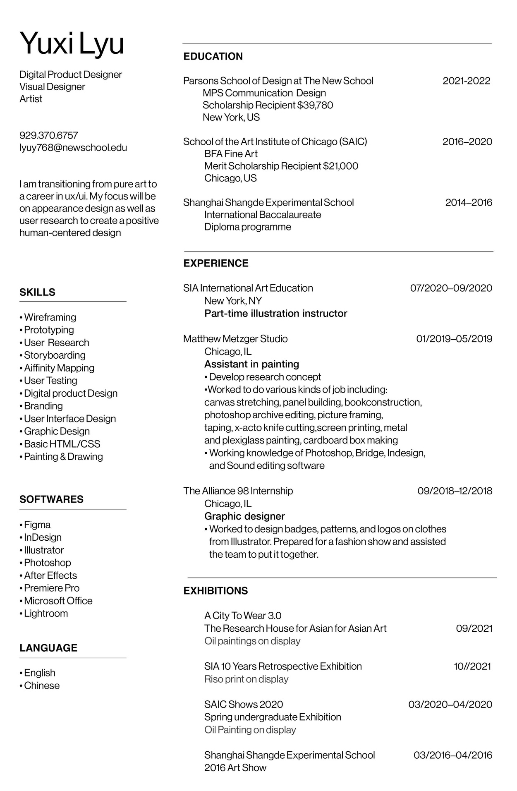
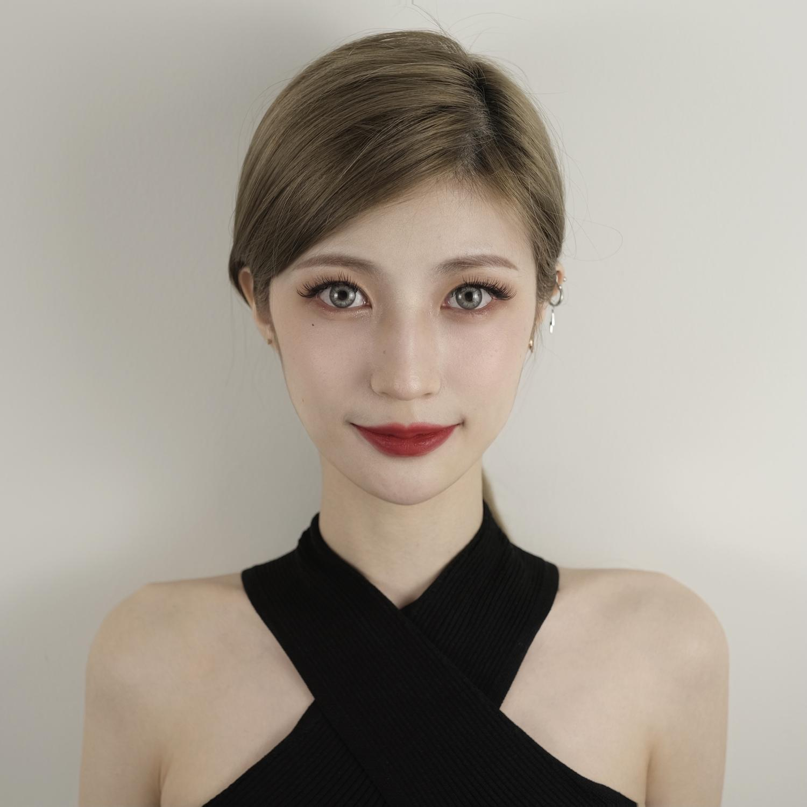
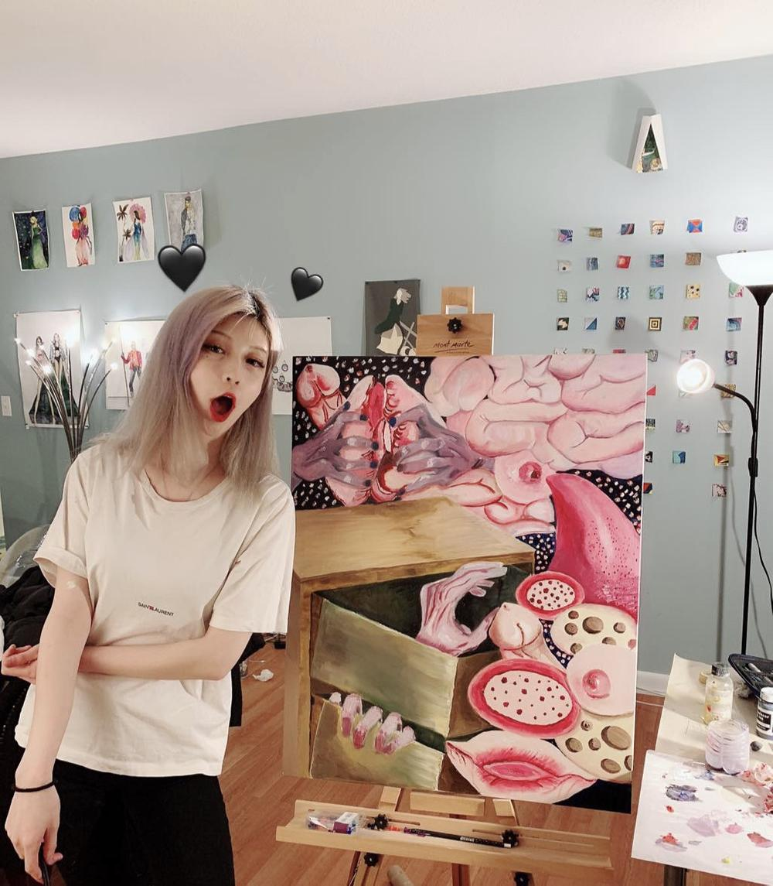

Yuxi Lyu
—
Designer and Artist
Email:
lyuy768@newschool.edu
Mobile:
9293706757
“Art is the object of feeling, and the subject of nature.”
(S.K.langer, American philosopher and educator)
Yuxi Lyu is a multidisciplinary designer and visual artist living in NYC. She received her MPS degree in communication design from the Parsons School of Design and BFA in fine art from the School of the Art Institute of Chicago. She is committed to creating avant-garde human-centered UX/UI design that positively affects society.

She loves to create human-centered UX/UI designs that bring positive effects, providing teams with diverse inspiration and strategic solutions based on her interdisciplinary background. She focuses on communication and empathy and believes in the power of design and art to make life better.
She is a recipient of the dean's scholarship for undergraduate majors in fine art and graduate students in communication design. In addition, her work was selected for the exhibition A City To Wear 3.0, organized by The Research House for Asian for Asian Art in Chicago, and her UX/UI work was evaluated as constructive and creative design.
She also enjoys drawing and painting and small animals in her free time.
Yuxi’s professional side

Yuxi’s professional side
